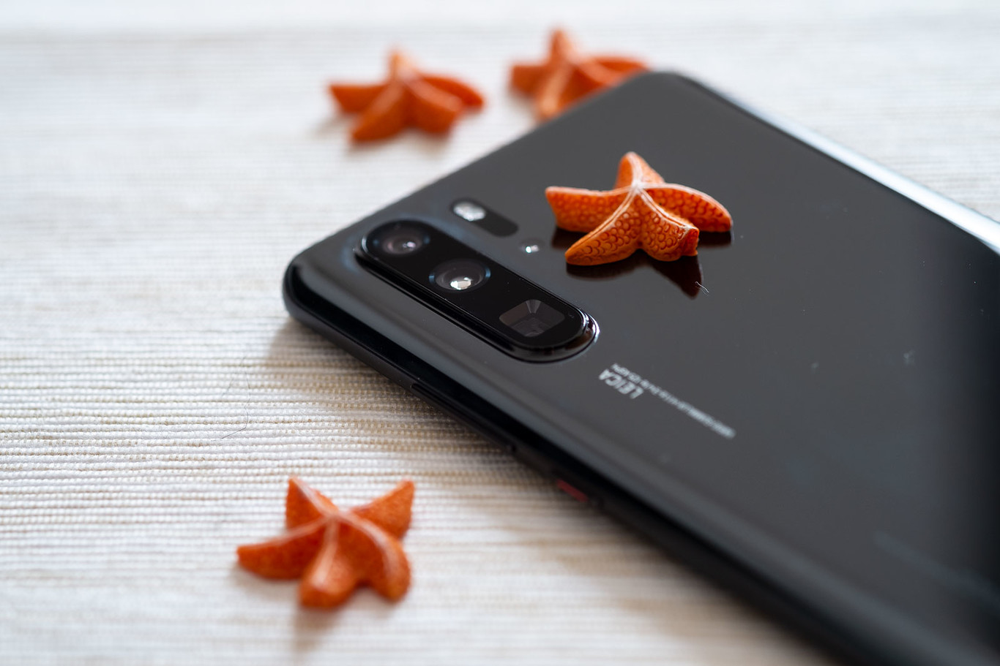
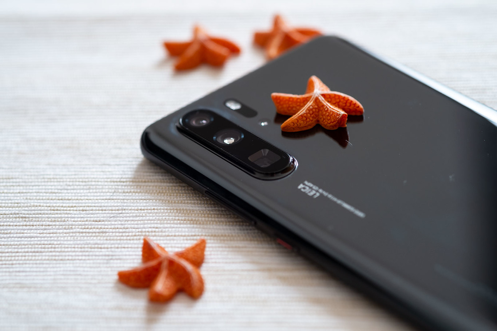

El nuevo tope de gama de Huawei en su serie P30 ha llegado
París es una ciudad muy adecuada para sacar partido a un zoom óptico y un super gran angular, y precisamente allí ha sido presentado el último buque insignia de Huawei. Una iteración centrada en evolucionar la fotografía y el diseño, lo cual hemos podido comprobar en el análisis del Huawei P30 Pro, el primero de la marca en incorporar cuatro cámaras.
Un móvil que mantiene rasgos de la marca y la línea, pero que a su vez ha experimenta una renovación interna y externa para poder competir en una gama alta cada vez más especializada en fotografía en conjunto con su mellizo pequeño el Huawei P30. Procesador y software de la casa, un nuevo sensor y el adiós al botón físico bajo la pantalla que deja atrás una era en lo referente a frontales, veamos qué ofrece el primer titán de Huawei para 2019.
Variaciones como los bordes superior e inferior planos, que rompen el semicírculo que dibuja la curvatura de los laterales, de modo que en teoría el móvil puede quedar erguido si lo apoyamos en equilibrio sobre su base (la superficie ha de estar completamente horizontal, a 0 grados, y sin un mínimo temblor). Eso en un marco metálico con acabado en mate (también en contraste con su antecesor), trazando así un ángulo recto con respecto a la pantalla y la trasera.

Un móvil que mantiene rasgos de la marca y la línea, pero que a su vez ha experimenta una renovación interna y externa para poder competir en una gama alta cada vez más especializada en fotografía en conjunto con su mellizo pequeño el Huawei P30. Procesador y software de la casa, un nuevo sensor y el adiós al botón físico bajo la pantalla que deja atrás una era en lo referente a frontales, veamos qué ofrece el primer titán de Huawei para 2019.
Diseño: dejando claro el linaje con curvas y el semáforo trasero
Curvas, brillo, metal y cristal. Los que podrían ser los cuatro pilares de la estética en la gama alta de los últimos años y que marcan también los raíles por los que circulan el diseño y la construcción del Huawei P30 Pro, aplicando algunas variaciones para que haya cierto componente renovador con respecto al Huawei P20 Pro.Variaciones como los bordes superior e inferior planos, que rompen el semicírculo que dibuja la curvatura de los laterales, de modo que en teoría el móvil puede quedar erguido si lo apoyamos en equilibrio sobre su base (la superficie ha de estar completamente horizontal, a 0 grados, y sin un mínimo temblor). Eso en un marco metálico con acabado en mate (también en contraste con su antecesor), trazando así un ángulo recto con respecto a la pantalla y la trasera.

Pantalla: la reducción del notch sobre un (¿demasiado?) prudente FullHD+
Huawei sigue siendo conservadora en la resolución de pantalla, y eso empieza a pesar teniendo en cuenta el aparente esfuerzo de la compañía en buscar la superioridad en fotografía. En el Huawei Mate 20 Pro vimos un QHD+ cuyos genes no han llegado a este nuevo miembro de la familia, que integra un panel de 6,47 pulgadas OLED con resolución FullHD+.Bien sea por ahorro, por consumo, por diferenciar gamas o por otro motivo, el caso es que la resolución es suficiente para ver bien el contenido y no echar en falta nitidez para un usuario poco exigente, pero siendo un buque insignia que aparentemente busca competir sin escatimar esperábamos que al menos llegase al QHD, sobre todo después de ver esta resolución ya (o por fin) en el Mate 20 Pro y siendo un valor que ya hemos visto en topes de gama desde hace años.